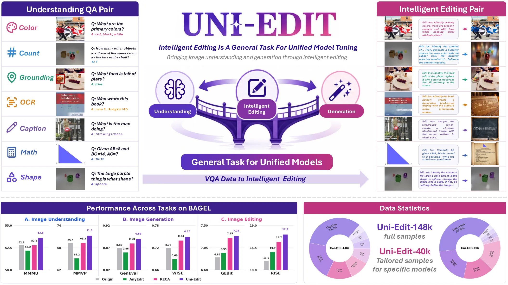
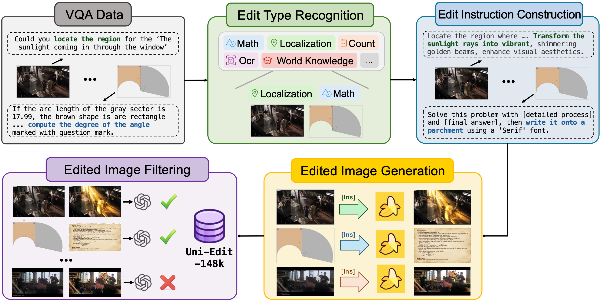
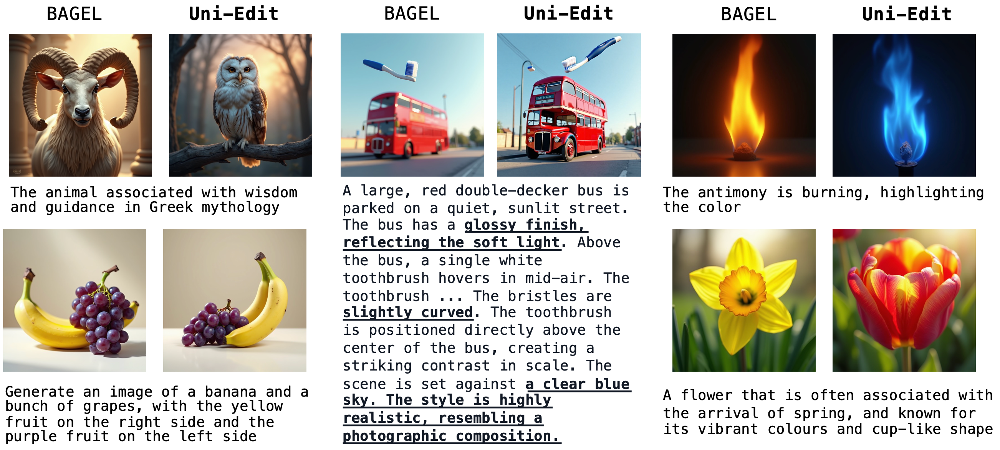
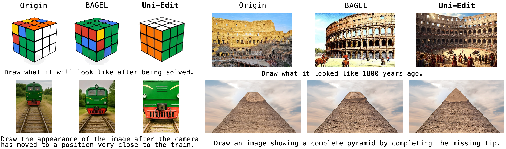

Uni-Edit: Intelligent Editing Is A General Task For Unified Model Tuning
We introduce Uni-Edit, an intelligent image editing task that improves image understanding, generation, and editing within a unified multimodal model using one task, one training stage, and one dataset.
1CUHK MMLab · 2TJU · 3USTC
†Project Leader · ✉Corresponding Author

Abstract
We introduce Uni-Edit, an intelligent image editing task that serves as a general task for Unified Multimodal Model (UMM) tuning. Unlike conventional mixed multi-task training that suffers from task conflicts and often requires complex multi-stage pipelines, Uni-Edit improves image understanding, generation, and editing capabilities simultaneously using only one task, one training stage, and one dataset.
To overcome the limitations of simplistic existing editing data, we propose an automated and scalable data synthesis pipeline for intelligent editing. By transforming diverse VQA data into complex instructions with embedded questions and nested logic, we build Uni-Edit-148k, a dedicated dataset pairing reasoning-intensive instructions with high-quality edited images.
Experiments on BAGEL and Janus-Pro demonstrate that tuning solely on Uni-Edit yields comprehensive enhancements across multimodal understanding, generation, and editing without requiring massive data mixing, balancing tricks, or auxiliary operations.
Data Construction
Uni-Edit constructs intelligent editing data by transforming VQA-style multimodal understanding examples into editing instructions that contain embedded questions, visual reasoning requirements, and nested logic. The resulting data pairs reasoning-intensive instructions with edited images, enabling unified model tuning through a single task.

Qualitative Results
Representative examples of intelligent editing, including reasoning-intensive instructions, edited images, and unified model behavior.

